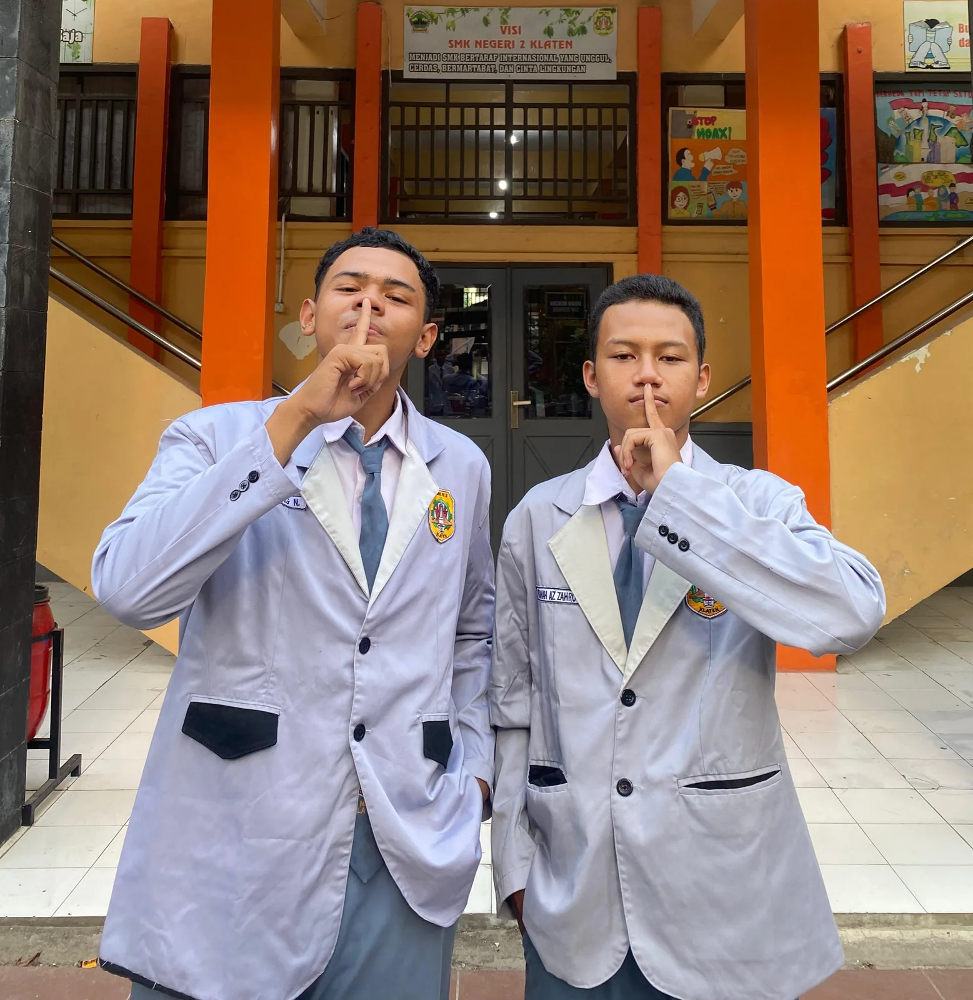
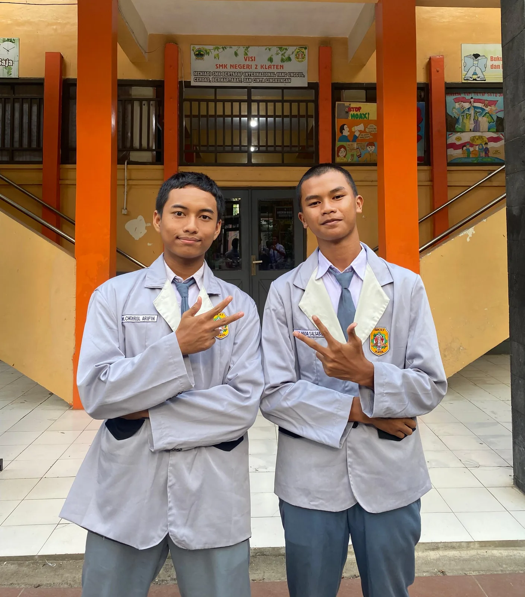

★ PEMILU PRESIDEN & WAKIL PRESIDEN ITSC 2026 ★
PILIH PRESIDEN & WAKIL PRESIDEN
PILIH PRESIDEN & WAKIL PRESIDEN
ITSC 2026 – 2027
PANDUAN
Klik LIHAT VISI MISI untuk mengenal program kerja setiap kandidat, lalu tekan VOTE untuk memberikan suara Anda.

KANDIDAT 01
KANDIDAT 02

KANDIDAT 03
▶ SISTEM PEMILU ITSC 2026
DASHBOARD
REKAPITULASI
DATA DIPERBARUI SECARA REALTIME · AKSES TERBATAS PANITIA
WAKTU SISTEM
00:00:00
-- / -- / ----
PROGRES PEMUNGUTAN SUARA
GENERATOR TOKEN PEMILIH (SHA-256 HASH)
TOTAL: 0
TERPAKAI: 0
TERSISA: 0
Generate hingga 1.000 token unik sekaligus. Database hanya menyimpan hasil enkripsi SHA-256 Hash; daftar token asli otomatis diunduh dalam format CSV untuk dibagikan ke pemilih.
PEROLEHAN SUARA PER KANDIDAT
LIVE
DISTRIBUSI SUARA
▶ TINGKAT PARTISIPASI
▶ REKAP KANDIDAT